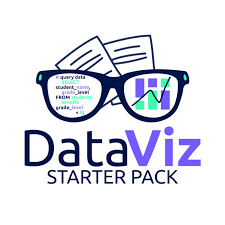
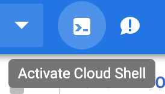
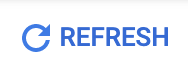
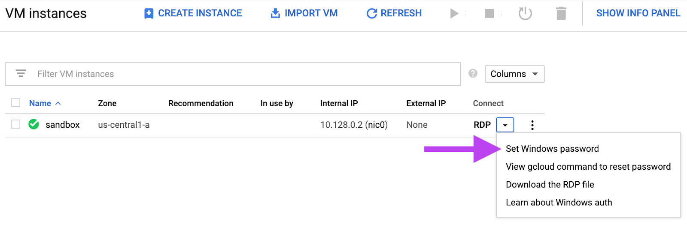
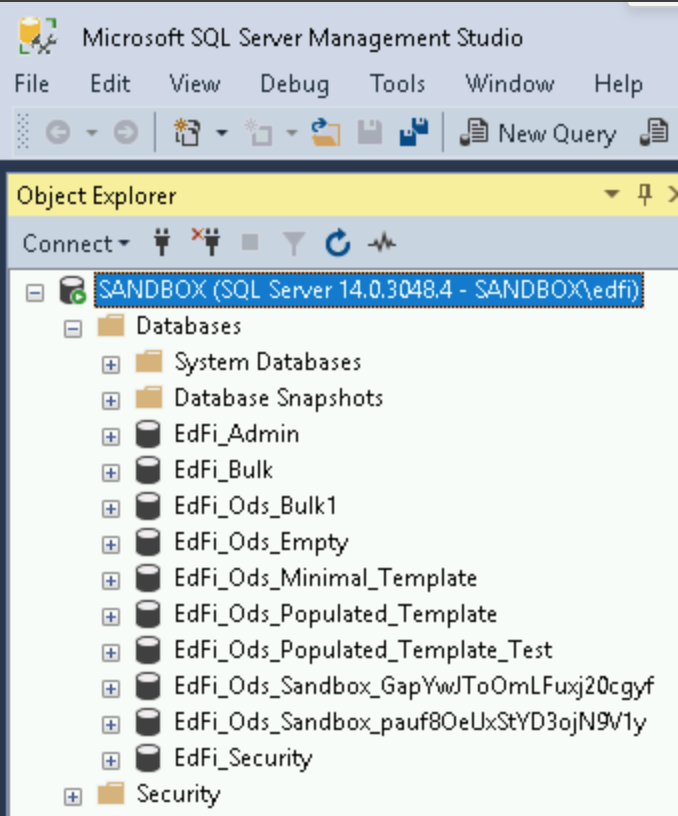
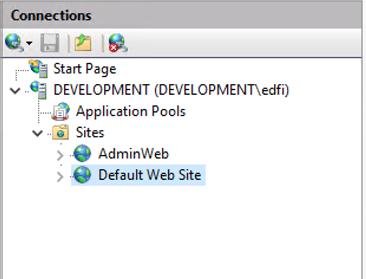

The Ed-Fi Alliance is responsible for both the Ed-Fi data standard (a defined set of rules that allows disparate educational data systems to connect) as well as the technology that enables users to take advantage of that standard. This primarily happens through an operational data store (ODS) and accompanying application programming interface (API).
You can read more about Ed-Fi here: https://www.ed-fi.org/
This tutorial will walk you through how to create an Ed-Fi v3.1 development environment in Google Cloud, including the ODS and the API. This environment has the Sandbox Administration Portal deployed in it, allowing you to create and delete sandbox environments of the ODS.
 |
This tutorial was created by the DataViz Starter Pack team. We are a program that supports data analysts in education. Your school uses a student information system and countless edTech apps. We build the necessary infrastructure to bring that data together so it lives in one place. We maintain a data visualization library with all the essential reports so your school can hit the ground running, and we put you on a professional development track to help you learn the things needed to successfully build data visualizations and dashboards for your organization.
We implement an Ed-Fi ODS for the districts we support. Utilizing Apache Airflow, we bring together data from multiple, disparate sources into the Ed-Fi ODS via the provided API.
We've given you access to our Ed-Fi development environment image, and you're ready to build the virtual machine in your Google Cloud. Let's get started! Log into your Google Cloud and navigate to Compute Engine, or click below:
https://console.cloud.google.com/compute/instances
 |
Look for the Cloud Shell icon shown above in your Google Cloud and click it to activate a Cloud Shell connection. Paste in the command below to create the virtual machine.
gcloud compute instances create development --image edfi-31-development --image-project public-resources-240800 --zone us-central1-c --machine-type n1-standard-4It should take ~5 minutes for Google to create your new Compute Engine VM. You'll be able to see that the process has started by clicking on the  button. When you see a green check mark next to your new VM, head to the next step in this tutorial.
The first thing we want to do now that you have your Compute Engine VM is to reset the password for Windows. Click on the arrow next to RDP and select Set Windows password.

When prompted, enter edfi as your username and click Set. Google will generate a new password for you, please store it somewhere safe.
Install the Chrome RDP for Google Cloud Platform extension.
Once installed, head back to your VM instances page in Google Cloud and click on RDP. A window should open asking you for your recently set username and password.
Click on the Start Menu and launch Microsoft SQL Server Management under the Microsoft SQL Server Tools 18 folder. You'll see a few databases set up and ready to go. The database EdFi_Ods_Sandbox_GapYwJToOmLFuxj20cgyf is seeded with fake school data so you can get a good idea of what an Ed-Fi database looks like.
 |
Before we access the Sandbox Administration Portal, we need to set your SSL certificate. Click on the Start Menu and launch Internet Information Services (IIS) Manager under Windows Administrative Tools. Expand the DEVELOPMENT server under Connections to see the two sites configured in IIS.
 |
Select AdminWeb and follow the steps below to select an SSL certificate
Select Default Web Site and repeat the steps above.
Open Google Chrome and head to https://localhost:38928/. After a few minutes, you'll see the Sandbox Administration portal. Click Login and login with:
Username: test@ed-fi.org
Password: YFtou0HS7WfIO8pwDqvGQ
You can read more about the Sandbox Administration Portal on the site below:
https://techdocs.ed-fi.org/display/ODSAPI31/Using+the+Sandbox+Administration+Portal
That's it -- you've successfully deployed a development environment of Ed-Fi v3.1.1! We encourage you to explore the database schema, explore the API endpoints via https://api.ed-fi.org/, and create a few client scripts of your own to interact with your newly deployed API. We are even linking a sample Python script to help you get started.
Check out a few projects by InnovateEDU:
Project Unicorn: https://www.projunicorn.org/
DataViz Starter Pack: https://www.datavizstarterpack.com/